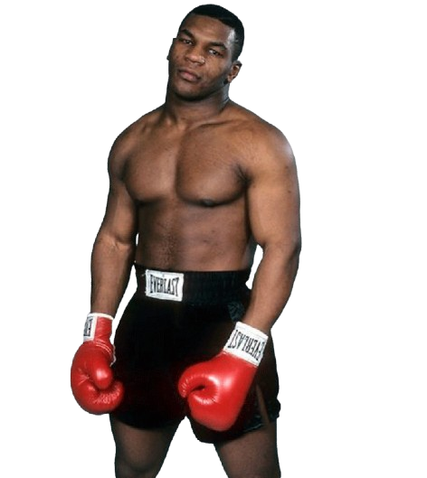

Ik ben Jody Mahmoud, ik ben 17 jaar oud. Ik ben geboren in Syrië en woon ongeveer 9 jaar in nederland Mijn hobby's zijn Voetballen, sportschool, boxen en tekenen. Mijn favoriete boxer is Mike Tyson
Op school heb ik het NG vakkenpakket gekozen. Mijn favoriete vakken zijn wiskunde en informatica